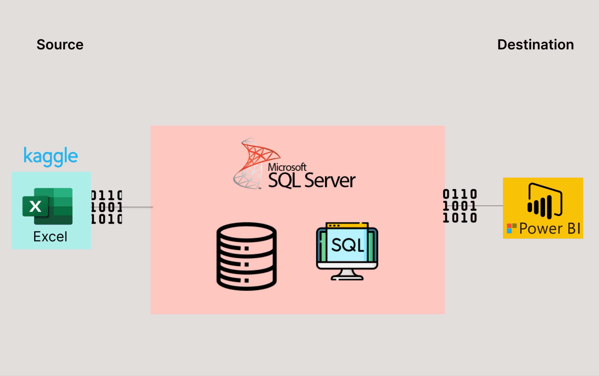

In this project, we utilized the analytics capabilities of Excel, SQL, and Power BI to investigate and uncover insights in the prevalence of depression and associated risk factors among international students in a university population.

This project leverages Tableau to analyse, uncover, and visualize insights from global suicide data over a time period.

In this project, Python modules (BeautifulSoup) was utilised to extract product information from Amazon.

Uncovering customer purchase patterns and behaviours using Python.

This end-to-end project utilises the capabilities of Excel, SQL and PowerBI to provide a detailed analysis of the top 10 Youtubers in the UK.

This project demonstrates the effectiveness of combining data science tools and visualization in analyzing customers sentiments on an e-commerce website. Pretrained model vADER and Machine learning models were used to label each customer review as positive, negative or neutral.

This project demonstrates how different machine learning algorithms performed in Predicting Client Churn.